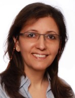

Marjan Sirjani

Professor
School of IDT
Direct +46 73 662 0517
Mälardalen University
marjan.sirjani [AT] mdh.se
Högskoleplan 1, 722 20 Västerås, Sweden
Tel +46 21 10 13 00
www.mdh.se
|
Marjan Sirjani is a Professor at School of Innovation, Design and Engineering at
Malardalen University (MDH), Vasteras, Sweden. Her main research interest is applying formal methods in Software Engineering.
She works on modeling and verification of concurrent, distributed, timed, and self-adaptive systems.
Marjan and her research group are pioneers in building model checking tools, compositional verification theories, and state-space reduction techniques for actor-based models. She has been working on analyzing actors since 2001 using the modeling language Rebeca. Rebeca and its extensions are designed to bridge the gap between model-based software development and formal analysis, and has been used for analyzing different network and system applications. She has also worked on coordination languages and is the co-author of the paper proposing Constraint Automata as the compositional formal semantics for the coordination language Reo. Her research is now focused on safety and security assurance and performance evaluation of cyber-physical and autonomous systems.
Marjan is the founder and leader of Cyber-Physical Systems Analysis research group at MDH. She was a co-founder of Icelandic Center for Research on Software Engineering at Reykjavik University, and the founder of Formal Methods Laboratory at University of Tehran.
She has been a member of expert panel on Engineering and Physical Sciences at RANNÍS, The National Icelandic Centre for Research.
Marjan has been the PC member and PC chair of several international conferences including SEFM, iFM, Coordination, FM, FMICS, SAC, FSEN, and DATE.
She is an editor of the journal of Science of Computer Programming.
Before joining academia as a full-time faculty she has been the managing director of Behin System Company for more than ten years, developing software and providing system services. Marjan served as the head of the Software Engineering Department of School of Electrical and Computer Engineering at the University of Tehran from 2005 to 2008 prior to joining the School of Computer Science at Reykjavik in 2008.
She established FSEN conference series in 2005 with the help of the Steering Committee and support of School of Computer Science at IPM.
FSEN has been supported by IFIP WG2.2 and ACM SigSoft.
Google Scholar Profile
-
Invited Talk on Two Decades of Analysing Real-time Distributed Systems, Leicester University, Weekly Seminars (Online), May 7, 2021.
- Talk on Analysis of Cyber-Physical Systems, Reporting for Software Center, Sweden, March 2021
- Safe and Secure Adaptive Collaborative Systems, PI talk, SACSys Reporting Workshop, Jan. 19, 2021
- Agile Verification-Driven Development of Cyber-Physical Systems, Software Center, Sweden, June 11, 2020
- Modelling and Formal Analysis for Security and Safety, Serendipity reporting workshop, MDH, Sweden, March 10, 2020
- SACSys: Safe and Secure Adaptive Collaborative Systems, PI talk, SACSys Kickoff, Skövde, Sweden, Dec. 4, 2019, Skövde, Sweden
- Talk on Model Checking Tool for Rebeca: Afra, at Dagstuhl Seminar, Nov. 2019
- Debugging of Actor Programs using Rebeca Model Checking Tool, at Programming Languages for Distributed Systems and Distributed Data Management, Dagstuhl Seminar 19442, Oct. 27 – 31, 2019
- Reactive Actors: Isolation for Efficient Analysis of Distributed Systems, Invited Paper, IEEE/ACM DS-RT 2019, The 23rd International Symposium on Distributed Simulation and Real Time Applications, Cosenza, Italy, Oct. 7, 2019
- Analyzing Real-time Distributed Systems using Timed Actors, Keynote Talk, IEEE/ACM DS-RT 2019, The 23rd International Symposium on
Distributed Simulation and Real Time Applications, Cosenza, Italy, Oct. 7, 2019
- Reactive Systems: From Requirements to Verifiable Models to Code, Invited Talk, ASYDE 2019, Oslo, Norway, 16 September 2019
- Actor-based Design Platform for System of Systems, Invited Talk, COMPSAC 2019, CAP: Computer Architecture & Platforms, Milwaukee, US, July 17, 2019
- Designing Actor Languages for Model Checking and Performance Evaluation, Programming Language Research Meetup @ Oracle, Stockholm, Sweden, June 12, 2019
- Actors for Analysis, Shonan School, Japan, May 27, 2019
- A Formal Model to Integrate Behavioural and Structural Adaptations in Self-Adaptive Systems, April 2019, FSEN, Tehran, Iran
- Dependable Cyber-Physical Systems, Iran Academy of Science, Tehran, Iran, April 22, 2019
- MACMa: Modeling and Analyzing Event-based Autonomous Systems (Project #29), Software Center, Ericsson, Sweden, April 12, 2019
- Modeling, Formal Verification and Analysis of Distributed Systems, DPAC summit, April 10, 2019.
- Trusting Autonomous Systems, Inauguration Lecture, MDH, Sweden, April 4, 2019
- Timed Rebeca: From Requirement to Design to Code, Bombardier, Sweden, March 8, 2019
- On June 1st 2016, Marjan joined Mälardalen University, as the chair of Software Engineering.
- Marjan was the General Chair of iFM 2016, organized at Reykjavik University in June 2016.
- Prof. Edward Lee visited Reykjavik University in June 2016. Check Edward's talk.
- Visit Professor Edward Lee at School of EECS at UC Berkeley, April-May 2016.
- On the occasion of its 50th anniversary, Sharif University of Technology selected 50 individuals out of 48,000 graduates in the last 50 years, to receive its distinguished alumni award. Marjan was one of them!
- In January 2016, the SEADA project is approved by RANNIS, the Icelandic national research funding agency. Marjan is the PI.
- Visit Ptolemy Group at School of EECS at UC Berkeley on a Fulbright Scholar Grant from May to August 2015.
- Research interests:
- Formal Methods in Software Engineering
- Modeling Reactive and Concurrent Systems
- Actor Model
- Component-based Modeling
- Formal Verification
- Model Checking and Reduction Techniques
- Applying Formal Methods in System Design
- Analyzing Self-Adaptive Sytems
I am the Steering Committee Chair of FSEN and a member of Steering Committees of DisCoTec and COORDINATION.
Currently, or in the past I have been a PC member of MEMOCODE, SEFM, ACM SAC-Verification and Testing, ACM SAC-Coordination Models, TTCS, AGERE@Splash, ICSSEA, FOCLASA, FACS, and Coordination.
I have been the PC chair of FSEN, SEFM, COORDINATION, and FOCLASA.
- CV (PDF)
- Rebeca Homepage
Research Projects:
- SACSys: Safe and Secure Adaptive Collaborative Systems (2019-2023) - PI. Synergy project grant from the Knowledge Foundation Sweden (KKS).
- Serendipity: Safe and Reliable Platforms for Autonomy (2018-2023) - Co-PI. Framework project grant from Swedish Foundation for Strategic Research (SSF).
- MACMa: Modeling and Analyzing Cyber-Physical Systems (2016-) - PI. Software Center, Sweden.
- SEADA: Self-Adaptive Actors - Safety Assurance (2016- 2020) - PI. Icelandic National Research Institute (Rannis).
- TARO: Timed Asynchronous Reactive Objects in Distributed Systems (2011- 2015) - PI. Icelandic National Research Institute (Rannis).
-
See the ongoing projects at Rebeca Homepage
- Teaching at RU:
-
Teaching at UT:
- Software Engineering 1 (System Analysis and Design)
- Programming Languages, Design and Implementation
- Advanced Software Engineering
- Modeling and Verification of Concurrent and Reactive Systems
|